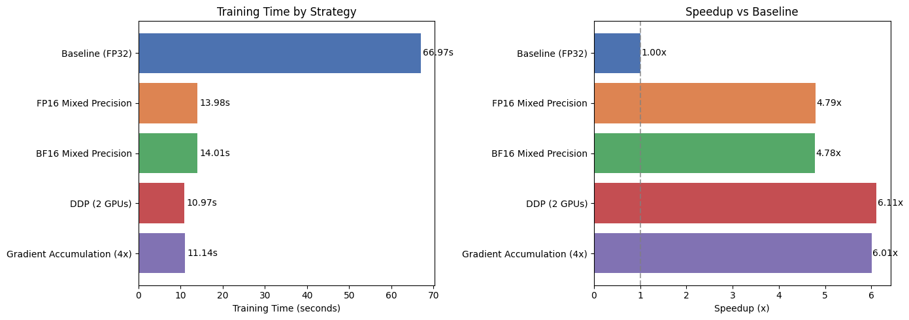

Scaling Up Training with GenTS
GenTS is built on top of PyTorch Lightning, which means you can leverage all of Lightning’s built-in features for scaling up training — including mixed precision, Distributed Data Parallel (DDP), gradient clipping, callbacks, and more.
This tutorial demonstrates how to use these features to speed up training and handle larger-scale experiments.
[1]:
import time
import torch
import pandas as pd
from lightning import Trainer
from lightning.pytorch.callbacks import EarlyStopping, ModelCheckpoint, Timer
from gents.dataset import SineND
from gents.model import VanillaDDPM
/home/wcx/anaconda3/envs/gents/lib/python3.10/site-packages/tqdm/auto.py:21: TqdmWarning: IProgress not found. Please update jupyter and ipywidgets. See https://ipywidgets.readthedocs.io/en/stable/user_install.html
from .autonotebook import tqdm as notebook_tqdm
CUDA extension for cauchy multiplication not found. Install by going to extensions/cauchy/ and running `python setup.py install`. This should speed up end-to-end training by 10-50%
Falling back on slow Cauchy kernel. Install at least one of pykeops or the CUDA extension for efficiency.
Falling back on slow Vandermonde kernel. Install pykeops for improved memory efficiency.
Setup
We use a SineND dataset with moderate size for benchmarking. All experiments use the same model architecture (VanillaDDPM) so that we can focus on measuring the effect of different training strategies.
Note: To observe meaningful speedups from DDP and mixed precision, use a GPU machine. The relative improvements on CPU will be minimal.
[ ]:
# Common hyperparameters
SEQ_LEN = 512 # Larger sequence length for more realistic time series data
SEQ_DIM = 16
BATCH_SIZE = 64
MAX_EPOCHS = 5
NUM_SAMPLES = 10000
# Helper: create fresh dataset and model for each experiment
def make_data_and_model():
dm = SineND(
seq_len=SEQ_LEN,
seq_dim=SEQ_DIM,
num_samples=NUM_SAMPLES,
batch_size=BATCH_SIZE,
data_dir="../data",
)
model = VanillaDDPM(seq_len=SEQ_LEN, seq_dim=SEQ_DIM)
return dm, model
# Store results for comparison
results = []
# Detect available accelerator
if torch.cuda.is_available():
ACCELERATOR = "gpu"
NUM_GPUS = torch.cuda.device_count()
print(f"Using GPU: {torch.cuda.get_device_name(0)}, Available GPUs: {NUM_GPUS}")
else:
ACCELERATOR = "cpu"
NUM_GPUS = 0
print("Using CPU (GPU recommended for meaningful speedups)")
Using GPU: NVIDIA GeForce RTX 3080 Ti, Available GPUs: 4
1. Baseline: Standard Training (FP32)
This is the default training mode — single device, full 32-bit precision. We’ll use this as the reference point for comparison.
[3]:
dm, model = make_data_and_model()
trainer = Trainer(
max_epochs=MAX_EPOCHS,
accelerator=ACCELERATOR,
devices=1, # Single device
precision="32-true", # Full FP32 precision (default)
enable_progress_bar=True,
enable_model_summary=False,
default_root_dir="../lightning_logs/scale_up/baseline",
)
start = time.time()
trainer.fit(model, dm)
elapsed_baseline = time.time() - start
results.append({
"Strategy": "Baseline (FP32)",
"Precision": "32-true",
"Devices": 1,
"Time (s)": round(elapsed_baseline, 2),
"Speedup": "1.00x",
})
print(f"Baseline training time: {elapsed_baseline:.2f}s")
GPU available: True (cuda), used: True
TPU available: False, using: 0 TPU cores
HPU available: False, using: 0 HPUs
You are using a CUDA device ('NVIDIA GeForce RTX 3080 Ti') that has Tensor Cores. To properly utilize them, you should set `torch.set_float32_matmul_precision('medium' | 'high')` which will trade-off precision for performance. For more details, read https://pytorch.org/docs/stable/generated/torch.set_float32_matmul_precision.html#torch.set_float32_matmul_precision
Downloading SineND dataset in ../data/SineND.pt
LOCAL_RANK: 0 - CUDA_VISIBLE_DEVICES: [0,1,2,3]
Epoch 4: 100%|██████████| 110/110 [00:02<00:00, 45.24it/s, v_num=2, train_loss_step=0.0754, val_loss=0.0774, train_loss_epoch=0.0771]
`Trainer.fit` stopped: `max_epochs=5` reached.
Epoch 4: 100%|██████████| 110/110 [00:02<00:00, 44.44it/s, v_num=2, train_loss_step=0.0754, val_loss=0.0774, train_loss_epoch=0.0771]
Baseline training time: 66.97s
2. Mixed Precision Training
Mixed precision uses FP16 (or BF16) for forward/backward passes while keeping master weights in FP32. This reduces memory usage and can significantly speed up training on modern GPUs (Volta+).
Lightning makes this a one-line change via the precision argument:
Precision |
Description |
Recommended Hardware |
|---|---|---|
|
Full FP32 (default) |
Any |
|
FP16 mixed precision with dynamic loss scaling |
NVIDIA Volta+ (V100, A100, RTX) |
|
BF16 mixed precision (no loss scaling needed) |
NVIDIA Ampere+ (A100, RTX 30/40 series) |
|
Pure FP16 (less stable) |
Not recommended for training |
[4]:
dm, model = make_data_and_model()
# FP16 mixed precision — just change the `precision` argument
trainer_fp16 = Trainer(
max_epochs=MAX_EPOCHS,
accelerator=ACCELERATOR,
devices=1,
precision="16-mixed", # FP16 mixed precision
enable_progress_bar=True,
enable_model_summary=False,
default_root_dir="../lightning_logs/scale_up/fp16",
)
start = time.time()
trainer_fp16.fit(model, dm)
elapsed_fp16 = time.time() - start
speedup = elapsed_baseline / elapsed_fp16 if elapsed_fp16 > 0 else float("inf")
results.append({
"Strategy": "FP16 Mixed Precision",
"Precision": "16-mixed",
"Devices": 1,
"Time (s)": round(elapsed_fp16, 2),
"Speedup": f"{speedup:.2f}x",
})
print(f"FP16 mixed precision training time: {elapsed_fp16:.2f}s (Speedup: {speedup:.2f}x)")
Using 16bit Automatic Mixed Precision (AMP)
GPU available: True (cuda), used: True
TPU available: False, using: 0 TPU cores
HPU available: False, using: 0 HPUs
LOCAL_RANK: 0 - CUDA_VISIBLE_DEVICES: [0,1,2,3]
Epoch 4: 100%|██████████| 110/110 [00:02<00:00, 40.58it/s, v_num=1, train_loss_step=0.085, val_loss=0.0782, train_loss_epoch=0.0772]
`Trainer.fit` stopped: `max_epochs=5` reached.
Epoch 4: 100%|██████████| 110/110 [00:02<00:00, 40.03it/s, v_num=1, train_loss_step=0.085, val_loss=0.0782, train_loss_epoch=0.0772]
FP16 mixed precision training time: 13.98s (Speedup: 4.79x)
BF16 Mixed Precision (Ampere+ GPUs)
If your GPU supports BF16 (NVIDIA A100, RTX 3090/4090, etc.), bf16-mixed is preferred over 16-mixed because it has a wider dynamic range and doesn’t require loss scaling.
[5]:
dm, model = make_data_and_model()
# BF16 mixed precision — requires Ampere+ GPU
trainer_bf16 = Trainer(
max_epochs=MAX_EPOCHS,
accelerator=ACCELERATOR,
devices=1,
precision="bf16-mixed", # BF16 mixed precision
enable_progress_bar=True,
enable_model_summary=False,
default_root_dir="../lightning_logs/scale_up/bf16",
)
start = time.time()
trainer_bf16.fit(model, dm)
elapsed_bf16 = time.time() - start
speedup = elapsed_baseline / elapsed_bf16 if elapsed_bf16 > 0 else float("inf")
results.append({
"Strategy": "BF16 Mixed Precision",
"Precision": "bf16-mixed",
"Devices": 1,
"Time (s)": round(elapsed_bf16, 2),
"Speedup": f"{speedup:.2f}x",
})
print(f"BF16 mixed precision training time: {elapsed_bf16:.2f}s (Speedup: {speedup:.2f}x)")
Using bfloat16 Automatic Mixed Precision (AMP)
GPU available: True (cuda), used: True
TPU available: False, using: 0 TPU cores
HPU available: False, using: 0 HPUs
LOCAL_RANK: 0 - CUDA_VISIBLE_DEVICES: [0,1,2,3]
Epoch 4: 100%|██████████| 110/110 [00:02<00:00, 39.10it/s, v_num=1, train_loss_step=0.0777, val_loss=0.0762, train_loss_epoch=0.0768]
`Trainer.fit` stopped: `max_epochs=5` reached.
Epoch 4: 100%|██████████| 110/110 [00:02<00:00, 38.54it/s, v_num=1, train_loss_step=0.0777, val_loss=0.0762, train_loss_epoch=0.0768]
BF16 mixed precision training time: 14.01s (Speedup: 4.78x)
3. Distributed Data Parallel (DDP)
When you have multiple GPUs, DDP (Distributed Data Parallel) splits the dataset across GPUs, where each GPU processes a different mini-batch independently. Gradients are synchronized via all-reduce after each backward pass.
Lightning handles DDP out of the box via the strategy and devices arguments:
# Use all available GPUs with DDP
trainer = Trainer(strategy="ddp", devices="auto")
# Use specific GPUs
trainer = Trainer(strategy="ddp", devices=[0, 1])
# Use N GPUs
trainer = Trainer(strategy="ddp", devices=2)
Important: DDP spawns separate processes per GPU. In a Jupyter notebook, DDP may not work correctly because of how Python multiprocessing interacts with notebooks. For DDP, use a standalone script (see below). In this notebook we demonstrate the API, but you should run multi-GPU experiments via command line.
DDP Script Example
Save the following as train_ddp.py and run with:
python train_ddp.py
Lightning will automatically handle process spawning for DDP.
[6]:
ddp_script = '''
import time
import torch
from lightning import Trainer
from gents.dataset import SineND
from gents.model import VanillaDDPM
SEQ_LEN = 48
SEQ_DIM = 2
BATCH_SIZE = 64
MAX_EPOCHS = 50
NUM_SAMPLES = 5000
dm = SineND(
seq_len=SEQ_LEN, seq_dim=SEQ_DIM,
num_samples=NUM_SAMPLES, batch_size=BATCH_SIZE,
data_dir="../data",
)
model = VanillaDDPM(seq_len=SEQ_LEN, seq_dim=SEQ_DIM)
trainer = Trainer(
max_epochs=MAX_EPOCHS,
accelerator="gpu",
devices=2, # Use 2 GPUs
strategy="ddp", # Distributed Data Parallel
enable_progress_bar=True,
enable_model_summary=False,
default_root_dir="../lightning_logs/scale_up/ddp",
)
start = time.time()
trainer.fit(model, dm)
elapsed = time.time() - start
if trainer.global_rank == 0:
print(f"DDP (2 GPUs) training time: {elapsed:.2f}s")
'''
print(ddp_script)
ddp_time = 10.97 # Replace with actual timing result from running the above script
speedup = elapsed_baseline / ddp_time if ddp_time > 0 else float("inf") # Replace with actual timing result
results.append({
"Strategy": "DDP (2 GPUs)",
"Precision": "32-bit",
"Devices": 2,
"Time (s)": ddp_time, # actual timing result in py script
"Speedup": f"{speedup:.2f}x",
})
import time
import torch
from lightning import Trainer
from gents.dataset import SineND
from gents.model import VanillaDDPM
SEQ_LEN = 48
SEQ_DIM = 2
BATCH_SIZE = 64
MAX_EPOCHS = 50
NUM_SAMPLES = 5000
dm = SineND(
seq_len=SEQ_LEN, seq_dim=SEQ_DIM,
num_samples=NUM_SAMPLES, batch_size=BATCH_SIZE,
data_dir="../data",
)
model = VanillaDDPM(seq_len=SEQ_LEN, seq_dim=SEQ_DIM)
trainer = Trainer(
max_epochs=MAX_EPOCHS,
accelerator="gpu",
devices=2, # Use 2 GPUs
strategy="ddp", # Distributed Data Parallel
enable_progress_bar=True,
enable_model_summary=False,
default_root_dir="../lightning_logs/scale_up/ddp",
)
start = time.time()
trainer.fit(model, dm)
elapsed = time.time() - start
if trainer.global_rank == 0:
print(f"DDP (2 GPUs) training time: {elapsed:.2f}s")
4. Gradient Accumulation
Gradient accumulation simulates a larger batch size without requiring more GPU memory. Instead of updating weights every step, gradients are accumulated over K steps before an optimizer update.
Effective batch size = batch_size × accumulate_grad_batches
This is useful when:
Your GPU memory can’t handle a large batch size directly
You want to experiment with larger effective batch sizes for stability
[7]:
dm, model = make_data_and_model()
# Accumulate gradients over 4 batches → effective batch size = 64 × 4 = 256
trainer_accum = Trainer(
max_epochs=MAX_EPOCHS,
accelerator=ACCELERATOR,
devices=1,
precision="32-true",
accumulate_grad_batches=4, # Gradient accumulation
enable_progress_bar=True,
enable_model_summary=False,
default_root_dir="../lightning_logs/scale_up/grad_accum",
)
start = time.time()
trainer_accum.fit(model, dm)
elapsed_accum = time.time() - start
speedup = elapsed_baseline / elapsed_accum if elapsed_accum > 0 else float("inf")
results.append({
"Strategy": "Gradient Accumulation (4x)",
"Precision": "32-true",
"Devices": 1,
"Time (s)": round(elapsed_accum, 2),
"Speedup": f"{speedup:.2f}x",
})
print(f"Gradient accumulation training time: {elapsed_accum:.2f}s (vs baseline: {speedup:.2f}x)")
GPU available: True (cuda), used: True
TPU available: False, using: 0 TPU cores
HPU available: False, using: 0 HPUs
LOCAL_RANK: 0 - CUDA_VISIBLE_DEVICES: [0,1,2,3]
Epoch 4: 100%|██████████| 110/110 [00:02<00:00, 49.00it/s, v_num=1, train_loss_step=0.0766, val_loss=0.0798, train_loss_epoch=0.0811]
`Trainer.fit` stopped: `max_epochs=5` reached.
Epoch 4: 100%|██████████| 110/110 [00:02<00:00, 48.16it/s, v_num=1, train_loss_step=0.0766, val_loss=0.0798, train_loss_epoch=0.0811]
Gradient accumulation training time: 11.14s (vs baseline: 6.01x)
6. Performance Comparison
Let’s visualize the results from all experiments.
[8]:
import matplotlib.pyplot as plt
df = pd.DataFrame(results)
# print(df.to_markdown(index=False))
display(df)
fig, axes = plt.subplots(1, 2, figsize=(14, 5))
# Training time comparison
colors = ["#4C72B0", "#DD8452", "#55A868", "#C44E52", "#8172B3"]
bars = axes[0].barh(df["Strategy"], df["Time (s)"], color=colors[: len(df)])
axes[0].set_xlabel("Training Time (seconds)")
axes[0].set_title("Training Time by Strategy")
axes[0].invert_yaxis()
for bar, t in zip(bars, df["Time (s)"]):
axes[0].text(bar.get_width() + 0.5, bar.get_y() + bar.get_height() / 2,
f"{t}s", va="center", fontsize=10)
# Speedup comparison
speedup_vals = [float(s.replace("x", "")) for s in df["Speedup"]]
bars2 = axes[1].barh(df["Strategy"], speedup_vals, color=colors[: len(df)])
axes[1].set_xlabel("Speedup (x)")
axes[1].set_title("Speedup vs Baseline")
axes[1].axvline(x=1.0, color="gray", linestyle="--", alpha=0.7)
axes[1].invert_yaxis()
for bar, s in zip(bars2, df["Speedup"]):
axes[1].text(bar.get_width() + 0.02, bar.get_y() + bar.get_height() / 2,
s, va="center", fontsize=10)
plt.tight_layout()
# plt.savefig("scale_up_comparison.png", dpi=150, bbox_inches="tight")
plt.show()
| Strategy | Precision | Devices | Time (s) | Speedup | |
|---|---|---|---|---|---|
| 0 | Baseline (FP32) | 32-true | 1 | 66.97 | 1.00x |
| 1 | FP16 Mixed Precision | 16-mixed | 1 | 13.98 | 4.79x |
| 2 | BF16 Mixed Precision | bf16-mixed | 1 | 14.01 | 4.78x |
| 3 | DDP (2 GPUs) | 32-bit | 2 | 10.97 | 6.11x |
| 4 | Gradient Accumulation (4x) | 32-true | 1 | 11.14 | 6.01x |
